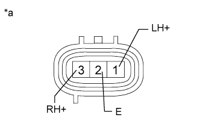
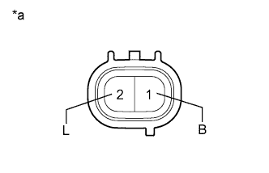

DTC C1762/62 Непрерывная подача тока в выпускной электромагнитный клапан |
| Код DTC | Условие обнаружения DTC | Неисправный участок |
| C1762/62 | По истечении 100 с после включения выпускного электромагнитного клапана подвеска автомобиля не опускается в положение нормальной высоты. |
|
| 1.АНАЛИЗ НЕИСПРАВНОСТИ, ЗАЯВЛЕННОЙ КЛИЕНТОМ |
Выясните у клиента, в каком состоянии автомобиля и при каких условиях был сохранен DTC.
| Вопросы, требующие уточнения |
|
| ДАЛЕЕ | |
| 2.ПРОВЕРЬТЕ DTC |
Сбросьте DTC (Нажмите здесь).
Запустите двигатель и дайте ему поработать не менее 100 с.
Установите высоту подвески HI, дождитесь завершения изменения высоты подвески автомобиля, а затем верните нормальную высоту подвески.
Проверьте коды DTC (Нажмите здесь).
| Результат | Следующий шаг |
| DTC C1762/62 выводится | А |
| DTC C1762/62 не выводится | B |
| Наряду с DTC C1762/62 выводятся другие DTC | C |
|
| ||||
|
| ||||
| А | |
| 3.ПРОВЕРЬТЕ ВОЗДУШНЫЙ ПАТРУБОК (НА НАЛИЧИЕ ЗАСОРЕНИЙ) |
Проверьте воздушные патрубки на наличие засорений (Нажмите здесь).
|
| ||||
| OK | |
| 4.ПРОВЕРЬТЕ КЛАПАН РЕГУЛИРОВКИ ВЫСОТЫ № 2 |
Выключите зажигание.
Снимите клапан регулировки высоты № 2 (Нажмите здесь).
|  |
Измерьте сопротивление в соответствии со значениями, приведенными в таблице.
| Контакты для подключения диагностического прибора | Состояние | Заданные условия |
| 1 (LH+) - 2 (E) | 15 - 25°C (59 - 77°F) | 17,5 - 21,5 Ом |
| 3 (RH+) - 2 (E) | 15 - 25°C (59 - 77°F) | 10 - 14 Ом |
| *a | Устройство с неподсоединенным жгутом проводов (клапан регулировки высоты № 2) |
Проверьте уравнительный электромагнитный клапан.
Подсоедините положительный (+) вывод аккумуляторной батареи к контакту 3 (RH+), а отрицательный (-) вывод – к контакту 2 (E).
Проверьте наличие звука срабатывания клапана регулировки высоты № 2.
Проверьте запорный электромагнитный клапан.
Подсоедините положительный (+) вывод аккумуляторной батареи к контакту 1 (LH+), а отрицательный (-) вывод – к контакту 2 (E).
Проверьте наличие звука срабатывания клапана регулировки высоты № 2.
|
| ||||
| OK | |
| 5.ПРОВЕРЬТЕ КОМПРЕССОР РЕГУЛИРОВКИ ВЫСОТЫ (ВЫПУСКНОЙ ЭЛЕКТРОМАГНИТНЫЙ КЛАПАН) |
Выключите зажигание.
Снимите компрессор регулировки высоты (Нажмите здесь).
|  |
Измерьте сопротивление в соответствии со значениями, приведенными в таблице ниже.
| Контакты для подключения диагностического прибора | Условие | Заданные условия |
| 2 (L) - 1 (B) | 20°C (68°F) | 10 - 14 Ом |
| *a | Устройство с неподсоединенным жгутом проводов (выпускной клапан) |
Подсоедините положительный (+) вывод аккумуляторной батареи к контакту 2 (L), а отрицательный (-) вывод – к контакту 1 (B) разъема электромагнитного клапана. Затем убедитесь в том, что клапан издает звук срабатывания.
|
| ||||
| OK | ||
| ||